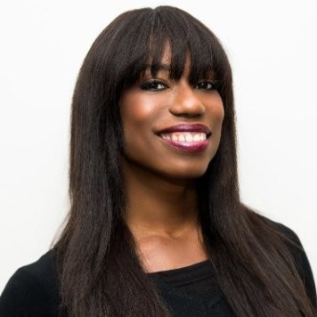
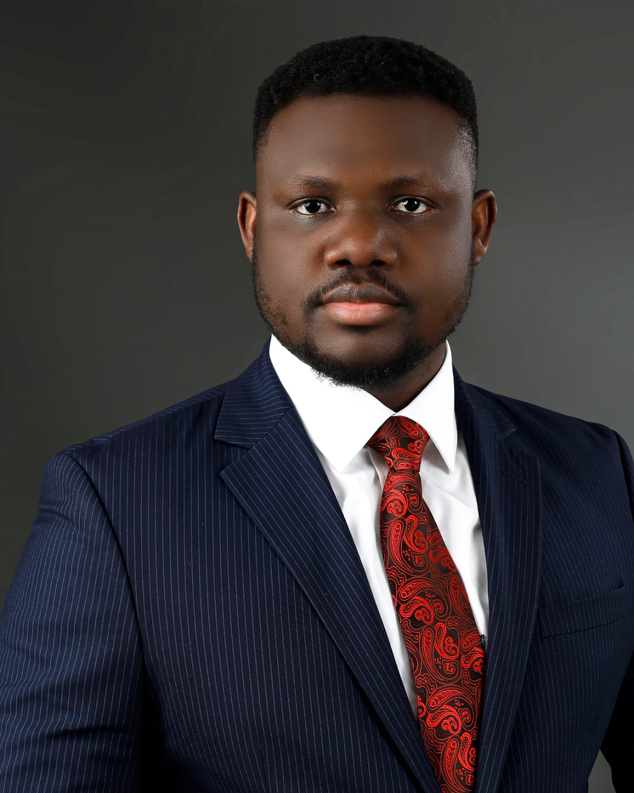

Board of advisors
Our advisors
Meridian17 is fortunate to rely on the advice of a growing body of advisors, each an expert in their field. We aim to grow our Board of Advisors to encompass globally recognised experts from our key focus areas.

Dr Edem Adzogenu
Investment Facilitation & Government Affairs
An accomplished investment facilitation and government affairs specialist who has advised African Heads of State, Fortune 500 companies, G7 countries, and African regional institutions. Under his leadership, AfroChampions has become a leading public-private partnership platform working alongside the African Union.

Prof Marleen Dekker
Inclusive Development in Africa, Leiden University
Professor of Inclusive Development in Africa at Leiden University and Director of the African Studies Centre Leiden. A human geographer with a PhD in Development Economics, she studies how social norms and networks shape market access and local socio-economic development.

Georja Calvin-Smith
Journalist & Broadcaster, France 24
A Paris-based journalist, event moderator and TV news presenter with over two decades in international current affairs broadcasting. She currently produces and anchors the daily Eye on Africa bulletin at France 24 and presents the weekly Across Africa magazine show.

Dr Olufunso Somorin
African Development Bank
Regional Principal Officer at the African Development Bank, leading climate change, green growth, and carbon markets initiatives in Eastern Africa. He has overseen 300+ development projects worth over USD 20 billion and serves on the UN Secretary General's Taskforce Expert Group on Net Zero Policy.
Dr Kelly Alexander
President, Meridian17
A social scientist who analyses geopolitical shifts and integrates sustainability into economic development. She lectures on Strategy & Sustainability at GIBS Business School and holds a PhD in Management & Organisation Studies from Tilburg University.